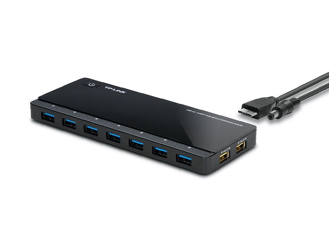
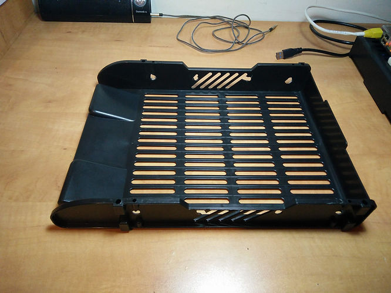
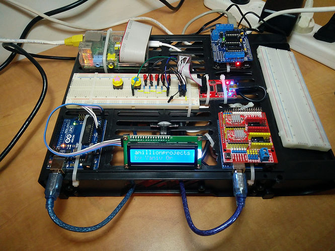
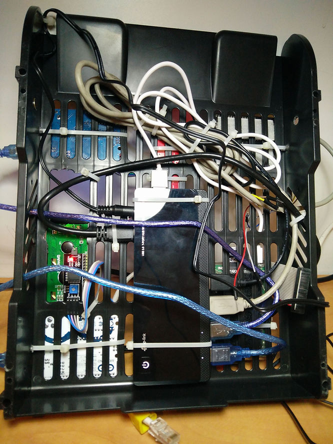
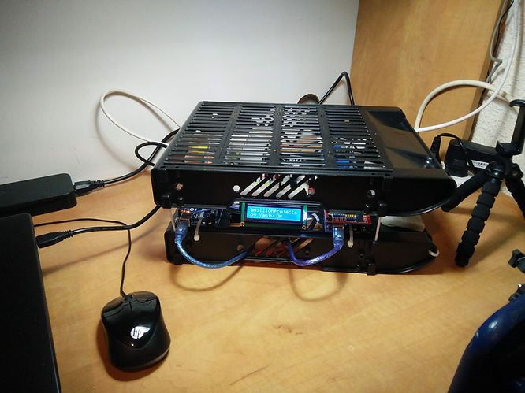
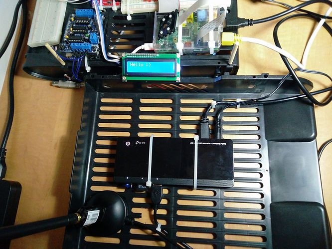
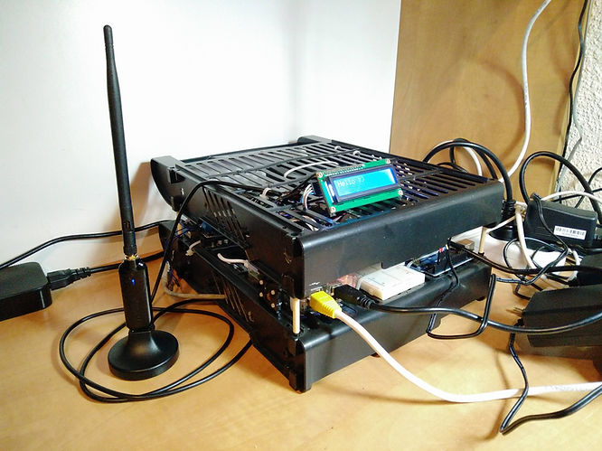

סידור המודולים במגש ניירת
התחיל להיות לי ברדק על השולחן. מודולים של ארדואינו, RaspberryPi, לוחות מטריצה והרבה כבלים - בעיקר USB.
קניתי USB HUB שמקבל הספק חיצוני וכך נותן הספק למכשירים במקום שיתחברו ישירות למחשב ויקבלו הספק ממנו. הדגם הוא UH720 של tp-link. מכיל 7 כניסות DATA ו-2 כניסות טעינה ב-2.4 אמפר.

מצאתי, באחת מחנויות מקס, מגש דפים לשולחן משרדי (מורכב מ-3 מדפים).
פירקתי את המדפים ועל אחד מהם פרסתי את המודולים וקשרתי באזיקונים.


נתחיל מהפינה השמאלית העליונה, עם כיוון השעון:
- RaspberryPi (Rev 2 Model B)
- Arduino Duemilanove (ATmega 328P) - on top, L293D Motor Drive Expansion Shield Board (see ebay.com) - compatibale with Adafruit's motor shield V1
- Breadboard (empty)
- Arduino Uno (ATmega 328P) - on top, CNC Shield Board V3 + A4988 Stepper Motor Driver (see ebay.com)
- LCD 1602 + i2c module
- Arduino Uno (ATmega 328P)
- Breadboard with attiny13, 5 leds,2 push buttons
- AVR Pocket Programmer
כל הכבלים מסודרים בחלק התחתון ומתחברים ל-USB HUB.

ויש גם מכסה...

דבר קטן חסר, משטח קירור. בעיקר ה-RPi מתחמם אבל כרגע לא קריטי, משום שהוא לא מבצע פעולות עיבוד מסויימות בשוטף. זה יהיה נחמד ויפה בכל מקרה.
כרגע, אין תקשורת בין הרכיבים אבל בקרוב תהיה.
עדכון: 15/8/19
קניתי USB Hub זהה נוסף (UH720 של tp-link). הוא ישמש את ה-RPi.

אל ה-Hub מחוברים, מימין לשמאל:
- D-Link - DWA-137 -
- Etion - Bluetooth 4.0 adapter
- Edimax - EW-7811UN
הדבר שאני מנסה ליצור בעזרת שני כרטיסי הרשת מתואר בפוסטים:
הגדרת כרטיס רשת אלחוטי כ-Access Point - על RPi
בהמשך אחבר גם את ה-AVR Pocket Programmer ואז אוכל לבדוק את הבעיה בפוסט:
תכנות AVR ושימוש ב-Programmer על ה-RPi
